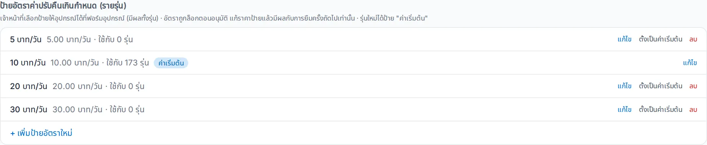
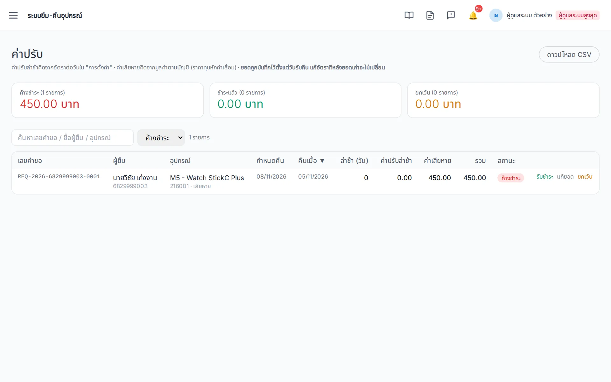
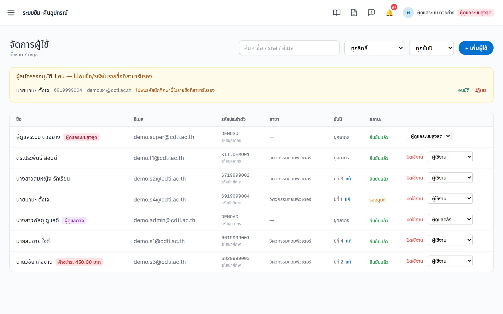
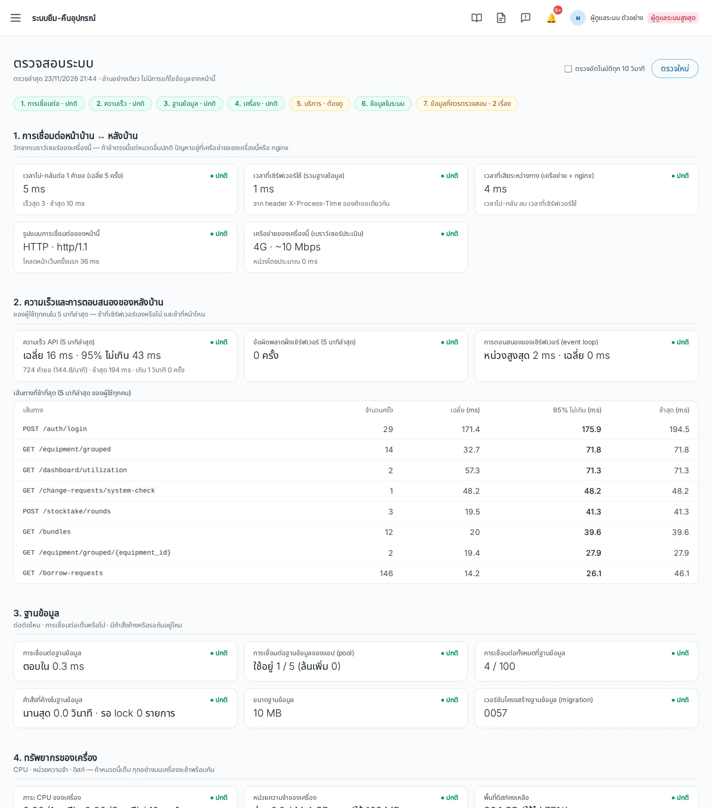

1. ขอบเขตของคู่มือ
ผู้ดูแลระบบสูงสุดทำงานของผู้ดูแลคลังได้ทุกอย่าง งานประจำ เช่น อนุมัติคำขอ จ่ายของ รับคืน และตรวจครุภัณฑ์
อ่านใน คู่มือเจ้าหน้าที่ เล่มนี้มีเฉพาะงานที่ทำได้ในระดับนี้เท่านั้น
งานในเล่มนี้กระทบเงิน สิทธิ์ของผู้อื่น หรือข้อมูลย้อนหลัง ทุกครั้งที่ทำจะถูกบันทึกในหน้า
ประวัติการใช้งาน และงานส่วนใหญ่ต้องพิมพ์เหตุผลก่อนยืนยัน
2. ป้ายอัตราค่าปรับ
อุปกรณ์แต่ละรุ่นใช้ป้ายอัตราค่าปรับคืนเกินกำหนดของตัวเอง ระบบตั้งป้ายไว้ให้ 4 ป้าย คือ 5, 10, 20 และ 30 บาทต่อวัน
ป้าย 10 บาทเป็นค่าเริ่มต้น และอุปกรณ์ทุกชิ้นเริ่มต้นที่ป้ายนี้
- ไปที่เมนู การตั้งค่า หัวข้อ ป้ายอัตราค่าปรับคืนเกินกำหนด (รายรุ่น)
- กด + เพิ่มป้ายอัตราใหม่ เพื่อสร้างป้าย หรือกด แก้ไข เพื่อเปลี่ยนชื่อหรือจำนวนเงินของป้ายเดิม
- กด ตั้งเป็นค่าเริ่มต้น ที่ป้ายที่ต้องการให้อุปกรณ์รุ่นใหม่ได้โดยอัตโนมัติ
- กด ลบ เพื่อลบป้ายที่ไม่ใช้แล้ว

รายการป้ายอัตราค่าปรับในหน้าการตั้งค่าแก้จำนวนเงินของป้าย มีผลกับการยืมครั้งถัดไปเท่านั้น เพราะอัตราถูกล็อกไว้ตอนอนุมัติ ของที่ยืมอยู่จึงไม่เปลี่ยนตาม
ลบป้ายที่ยังมีอุปกรณ์ใช้อยู่ หรือป้ายค่าเริ่มต้นไม่ได้ ให้ย้ายอุปกรณ์ไปป้ายอื่นก่อน
การเลือกป้ายให้อุปกรณ์แต่ละรุ่นเป็นงานของผู้ดูแลคลัง ทำในฟอร์มอุปกรณ์
3. ค่าปรับ: ยกเว้น และค่าตั้งค่าที่เกี่ยวกับเงิน
ผู้ดูแลระบบสูงสุดยกเว้นค่าปรับได้ทุกยอด ที่เมนู ค่าปรับ กดยกเว้นที่รายการที่ค้างชำระ แล้วพิมพ์เหตุผล
ยอดที่ยกเว้นยังอยู่ในรายงาน ไม่ถูกล้างเป็นศูนย์ จึงตอบได้เสมอว่ายกเว้นไปเท่าไร
จัดการค่าปรับของคำขอที่ตัวเองเป็นผู้ยืมไม่ได้ ต้องให้เจ้าหน้าที่คนอื่นทำ
ในหน้า การตั้งค่า ช่องต่อไปนี้แก้ได้เฉพาะผู้ดูแลระบบสูงสุด
- วันผ่อนผัน เพดานค่าปรับต่อรายการ และอัตรากลางที่ใช้กับรายการที่อนุมัติก่อนมีป้ายอัตรา
- ยอดค้างชำระที่ทำให้ระงับการยืม ค่าเริ่มต้น 200 บาท ถ้าใส่ 0 จะไม่ระงับเลย
- เพดานยอดที่ผู้ดูแลคลังยกเว้นได้เอง ถ้าใส่ 0 ผู้ดูแลคลังจะยกเว้นเองไม่ได้
- ค่าเสื่อม มูลค่าที่พิมพ์ในเอกสาร น้ำหนักที่ใช้คำนวณคุณภาพอุปกรณ์ และเวลาที่ระบบส่งแจ้งเตือนทุกวัน

หน้าค่าปรับของผู้ดูแลระบบสูงสุด
4. ราคาและทะเบียนของอุปกรณ์
ช่องในแท็บ ทะเบียน & การเงิน ของฟอร์มอุปกรณ์ คือ ราคาที่ซื้อ มูลค่าตามบัญชี วันที่ได้มา อายุการใช้งาน
และเลขครุภัณฑ์ ผู้ดูแลคลังกรอกช่องเหล่านี้ได้ตอนเพิ่มอุปกรณ์ใหม่เท่านั้น ถ้าต้องแก้ภายหลัง จะแก้ทีละชิ้นหรือหลายรายการพร้อมกันก็ตาม
ต้องเป็นผู้ดูแลระบบสูงสุด ผู้ดูแลคลังจะยื่นคำขอมาตามหัวข้อถัดไป
5. คำขอแก้ไขข้อมูล
เมนู คำขอแก้ไขข้อมูล รวมงานที่ผู้ดูแลคลังขอให้แก้ พร้อมเหตุผล
- เปิดคำขอ อ่านว่าต้องแก้อะไรและเพราะอะไร
- ไปแก้ข้อมูลนั้นด้วยตัวเองในหน้าที่เกี่ยวข้อง ระบบไม่แก้ข้อมูลให้อัตโนมัติจากคำขอ
- กลับมากดปิดงาน ระบุว่าทำให้แล้ว หรือไม่ดำเนินการพร้อมเหตุผล ผู้ยื่นจะเห็นผลนี้
 หน้าคำขอแก้ไขข้อมูล
หน้าคำขอแก้ไขข้อมูล6. บัญชีผู้ใช้: เปลี่ยนสิทธิ์และลบบัญชี
ที่เมนู จัดการผู้ใช้ ผู้ดูแลระบบสูงสุดเปลี่ยนระดับสิทธิ์ (ผู้ใช้งาน ผู้ดูแลคลัง ผู้ดูแลระบบสูงสุด) และลบบัญชีได้
ทั้งยังจัดการบัญชีของทุกระดับได้ ต่างจากผู้ดูแลคลังที่จัดการได้เฉพาะบัญชีที่ต่ำกว่าตัวเอง
- ปิดบัญชีตัวเองไม่ได้ และปิดหรือลดสิทธิ์ผู้ดูแลระบบสูงสุดคนสุดท้ายที่ยังใช้งานอยู่ไม่ได้
- ลบบัญชีแล้วประวัติการใช้งานของบัญชีนั้นยังอยู่ครบ แสดงชื่อและระดับสิทธิ์ ณ เวลาที่ทำ
- ถ้าเพียงไม่ต้องการให้เข้าระบบชั่วคราว ให้ปิดบัญชีแทนการลบ

หน้าจัดการผู้ใช้ของผู้ดูแลระบบสูงสุด
7. ซ่อนและกู้คืนประวัติการยืม
ใช้เมื่อคำขอถูกบันทึกผิด เช่น ยื่นซ้ำโดยไม่ตั้งใจ ที่เมนู ประวัติการยืม เปิดคำขอแล้วกด ลบประวัติ พิมพ์เหตุผล
คำขอจะถูกซ่อนจากทุกหน้า แต่ยังไม่หายจากฐานข้อมูล ท้ายหน้าเดียวกันมีปุ่ม ดูประวัติที่ถูกลบ (กู้คืนได้)
กด กู้คืน ที่รายการที่ต้องการ
คำขอที่มีประวัติค่าปรับซ่อนไม่ได้ เพราะยอดเงินจะหายจากรายงาน
การลบถาวรทำได้ทางเดียวคือผู้ดูแลเซิร์ฟเวอร์รันสคริปต์บนเครื่อง และลบได้เฉพาะคำขอที่ซ่อนไว้แล้ว
8. ตรวจสอบระบบ
เมนู ตรวจสอบระบบ แสดงความเร็วและสถานะของเซิร์ฟเวอร์ เช่น เวลาตอบสนองของแต่ละหน้า ภาระของฐานข้อมูล
CPU และหน่วยความจำ รวมทั้งเวลาที่เสียไประหว่างเครื่องของคุณกับเซิร์ฟเวอร์ ใช้ตรวจเมื่อมีผู้ใช้แจ้งว่าระบบช้า
การ์ดที่พบปัญหากดดูตัวอย่างแล้วไปยังหน้าที่ต้องแก้ได้

หน้าตรวจสอบระบบ